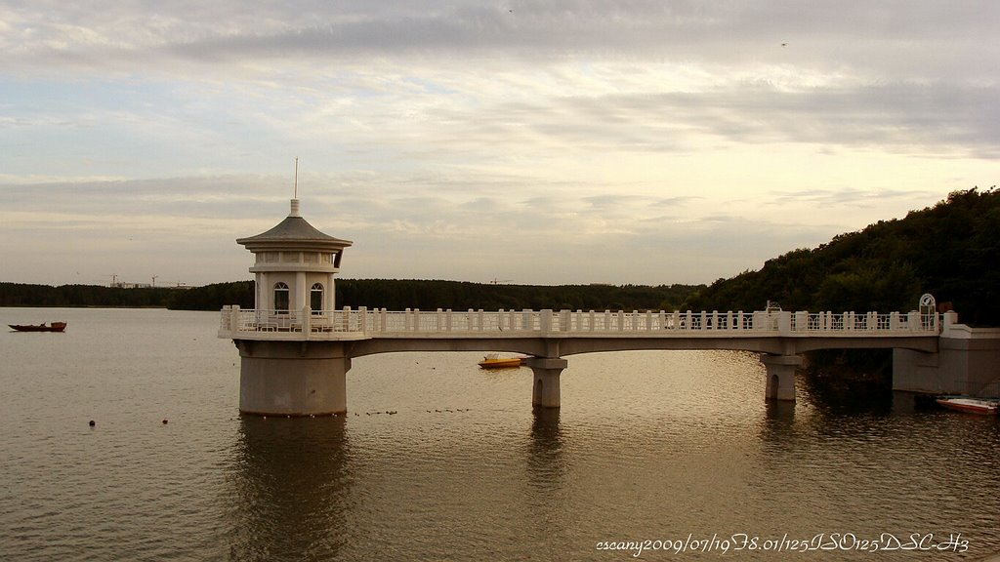
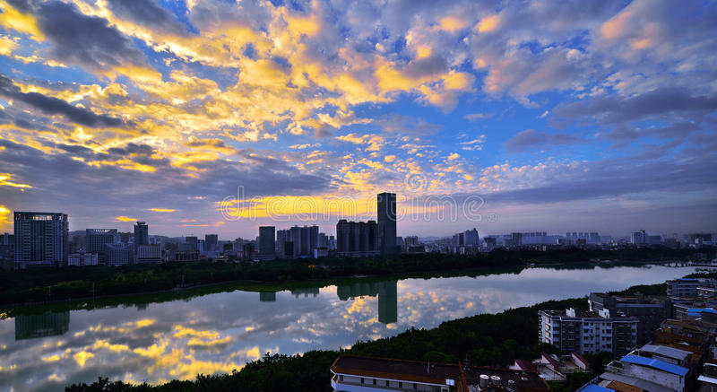
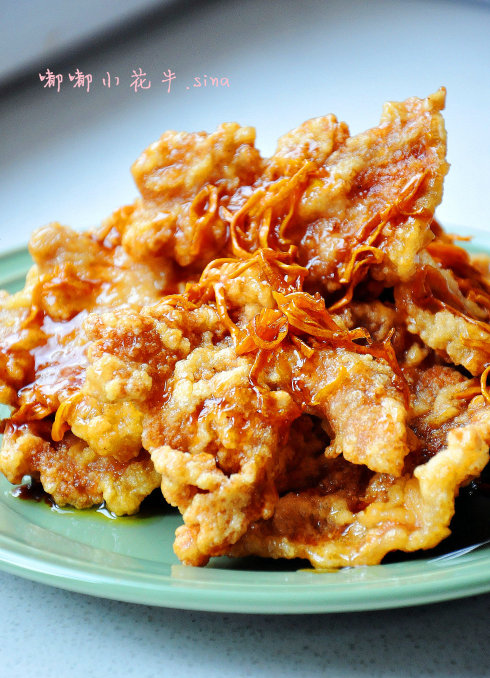
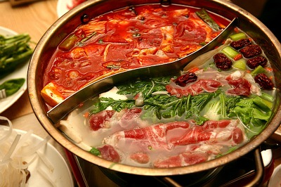

1. 위치
지린성을 끼고 있으며, 이퉁강[伊通河] 연안에 있다. 쑹랴오[松遼] 평원 중부지역으로 지린성의 행정·경제·교통·문화의 중심지이다. 연평균온도는 4.8℃이고, 1월 평균온도는 -16.9℃, 7월 평균온도는 22.9℃이다. 연강우량은 611mm이다.
창춘(중국어 간체: 长春, 정체: 長春, 한어 병음: Chángchūn, 중국조선말: 장춘)은 중화인민공화국 지린 성에 있는 부성급시이다. 지린 성의 성도이며, 정치, 경제, 문화의 중심을 담당하고 있다. 창춘 디이 자동차 제조 공장과 창춘 영화 제작소가 있어, 자동차공업과 영화 제작의 거점이 되고 있다. 총면적 20,571km2, 집시구의 면적은 3,578km2, 시가지는 168.6km2, 총인구는 712만명이다. 주민은 한족, 만주족, 조선족, 후이족, 몽골족, 시보족 등 38의 민족으로부터 구성된다.
2. 명소
징웨탄(净月潭)
지린성[吉林省] 창춘시[长春市] 차오양구[朝阳区]·난관구[南关区]에 위치한 만주국(满洲国) 정부 기구 건물이었던 팔대부(八大部)와 징웨탄[净月潭] 연못을 중심으로 한 풍경 명승구이다. 주요 명소로는 징웨탄[净月潭], 디즈궁[地质宫], 신민광장[新民广场], 난호[南湖] 공원 등이 있다. 팔대부는 만주국의 8개 통치 기관을 가리킨다. 즉, 치안부(治安部, 군사부 军事部), 사법부, 경제부, 교통부, 흥농부(兴农部), 문교부(文敎部), 외교부, 민생부(民生部) 등이다. 이 정치기구 청사는 장춘 신민다제[新民大街] 부근에 지어졌으며, 디즈궁을 중심으로 한 건축군이다. 길이 1,500m, 너비 60m의 관청 지구로 1930 년대에 조성되었으며, 건물의 옥상 모양은 일본 전통 양식을 따른 것이다. 디즈궁은 청나라의 마지막 황제 푸이의 정식 황궁으로 사용될 예정이었다. 1938년 9월 착공에 들어갔지만 태평양 전쟁 때문에 공사가 중지되었고, 지하 부분만 지어졌다. 1950년대에 이르러서야 건물이 완성되었지만, 현재는 지린[吉林]대학 수학과 건물로 사용되고 있다. 징웨탄은 창춘시 남동쪽에 위치하며, 연못과 삼림의 조화로 풍광이 아름답다. 이곳에 서식하는 동물은 82종이며, 그 중 조류는 60 여종이다. 중국 최대의 인공 조림장[造林場]으로 50여 년 이상 된 조림목이 8,000헥타르에 달한다
남호공원(南湖公园)
면적은 약 52만㎡이며, 1938년 조성되었다. 원래 명칭은 창자오호공원[長沼湖公園]이었으며, 해방 후에 현재의 명칭으로 변경되었다. 중국의 북방 원림예술 풍격을 갖춘 공원으로서 난윈강[南運河]이 공원 안으로 흐른다. 인방원(鄰芳園)·기방원(綺芳園)·군방원(群芳園)·어약하향원(魚躍荷香園) 등 정교하고 수려한 정원을 비롯하여 가산(假山)과 조각작품, 수중분수 등이 특색 있는 경관을 이루고, 스케이트장과 수영장, 어린이 놀이시설 등이 갖추어져 있다. 또 정기 또는 부정기로 각종 화훼전을 열고 있고, 열대어수족관 등을 갖추어 선양시에서 유일하게 관상어(觀賞魚)를 즐길 수 있는 공원이기도 하며, 해마다 겨울이면 수백 종의 진기한 빙등(冰燈) 전시회를 열어 시민들로부터 사랑받는다.
지역 음식
꿔바로우(锅包肉)
감자 전분으로 튀김옷을 입힌 돼지고기를 기름에 두 번 튀겨서 새콤달콤한 소스를 부어 먹는 중국 둥베이 지역 요리이다. 중국어로는 ‘꿔바로우(锅包肉)’라 한다. 청나라 때 외국사신들을 접대하는 과정에서 외국인, 특히 러시아인들의 입맛에 맞추기 위해 새콤달콤한 소스를 만들면서 발달한 요리이다. 먼저 돼지 등심을 3mm 두께에 사각형 모양으로 썰어 소금과 후추로 밑간을 한다. 감자 전분과 물을 섞어 만든 물전분에 돼지고기를 버무린다. 이때 채썬 생강과 다진 마늘을 넣고 같이 비빈다. 팬에 기름을 넉넉히 붓고 기름 온도가 약 180℃ 정도까지 끓어 올랐을 때 돼지고기를 넣고 튀긴다. 튀김옷이 형태를 잡으면 건져서 채에 받치고, 기름 온도가 더 올라갈 때까지 끓이다가 고기를 다시 한 번 튀겨준다. 소스는 설탕과 식초를 동량으로 넣고, 간장과 참기름을 추가하여 만들어 둔다. 팬에 마늘, 생강을 넣어 향을 낸 후, 소스가 고기에 잘 배도록 빠르게 볶아서 접시에 담아낸다. 튀김 반죽을 만들 때 농도를 너무 묽지 않게 해야 바싹한 식감을 살릴 수 있다. 중국의 꿔바로우와 다르게 고기 모양이 사각형이 아닌 기존의 일반 탕수육과 같은 모양인 경우가 많고, 튀김옷에 전분가루와 찹쌀가루를 섞어 쓴다. 요리에 사용하는 돼지 등심은 다른 부위에 비해 기름이 적고 육질이 부드러운 것이 특징이다. .
훠궈(火锅)
중국에는 샤브샤브와 비슷한 훠궈[1]라는 요리가 있으며 훠궈의 기본은 재료를 오래 끓이는 탕이기 때문에 샤브샤브와 다르다. 그렇지만 중국에서도 1980년대 이후 인기를 끌게 된 스타일의 훠궈는 샤브샤브 스타일에 영향받았으며 '끓는 국물에 고기를 잠깐동안 삶아서 건져내어 먹는다'는 기본 스타일만 유사하며, 나머지는 모두 다르다고 보면 된다. 다만 훠궈 자체가 한국인에게는 생소한 요리라서 한국 내 중국인들은 대부분 중국식 샤브샤브라고 설명해준다.[2] 쇠고기가 주류인 샤브샤브와 달리 훠궈는 양고기가 주류이며, 국물은 대체로 일본 샤브샤브보다는 탁한 편이다. 매운맛/담백한 맛에 따라 색은 붉은색 또는 뽀얀 흰색을 낸다.[3] 짬짜면처럼 한 솥에 두 종류 국물을 담아 여러 명이 취향에 맞게 즐기는 것이 가능하다. 또한 건져낸 고기는 깨장 혹은 참기름 베이스에 간장, 식초, 고추기름, MSG, 마늘 등등을 섞어서 만든 양념에 찍어 먹는다. 사람에 따라서는 찍어먹는 수준이 아니라, 양념에 풍덩 빠트려서 고기를 건져먹는 경우도 있다. 훠궈는 매운정도를 선택할 수 있는데, 아주순한맛/순한맛/매운맛/아주매운맛[4]으로 나뉜다. 중국 훠궈의 먹는 재미는 국물 뿐 아니라 바로 이 소스도 큰 비중을 차지한다. 중국 훠궈 집에 가면 아무리 작은 가게라도 최소 수십 종의 소스 재료(다진 마늘, 간장, 다진 고추, 참기름, 다진 고수, 굴소스 등)를 갖다놓고 손님 취향에 따라 마음껏 덜어다가 자신의 입맛에 맞는 소스를 만들 수 있게 한다.